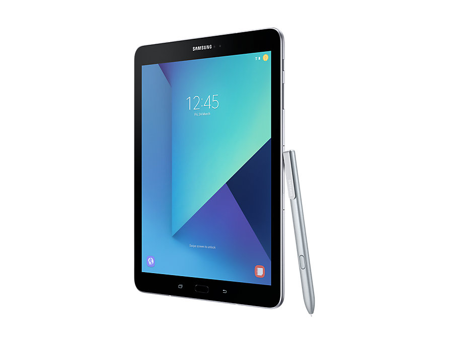

Tablet4you is an online electronics webshop specialized in selling and comparing tablets. The website is made simple and clear as much as possible so that everyone can use the website. Tablet4U was founded in 1999 and we therefore know what we are doing and have a good understand of our products.
Customer is king. That's why we do our best to help our customers and can help you with questions or problems really quick.
All you have to do is go to the contact page and fill in the required information, and you'll get helped in 24 hours.
Why buy from Tablet4You?
-
Speed: We carry our own stock. The delivery times are shown against each item on our website. You can therefore be confident of the delivery time when you place your order. The great majority of our products are in stock. For items in stock in the Netherlands, if you place your order before mid-afternoon, you should receive your delivery within two or three working days.
-
Service:
Should you have any problems with your tablet, we offer help and advice. Problems that are software-related can usually be solved by phone or email. Where the hardware itself appears to be faulty, we'll try to isolate the problem (to the pen, tablet, etc) and then suggest the best course of action. We'll attempt to keep the inconvenience to you to a minimum, so that you can be up and running with your tablet again as soon as possible.
-
Quality:
Tablet4U has sold WACOM tablets since 1999 and we therefore have a good understanding of products. This is obvious not only from our website but also from the personal help and advice we can give you in purchasing a tablet. This advice is available both by email and telephone. We try to answer all the questions you have.
-
Choice: We sell every WACOM tablet and spare part. Even the small parts that are difficult to find elsewhere, you can find on our site. And we frequently offer attractive combinations of products at a cheaper price than buying the products individually.
-
Transparency: You pay a fixed shipping cost and nothing more. The exact cost is itemised onscreen when you are placing your order, so that you can see exactly how much you're paying for what.

Customer review
"I am very satisfied with the website, it is very simple and clear. You can easily find what you
are looking for by filtering by brand, color or other specifications. It is easy to use for everyone and
i give the website a 9.5 / 10. "